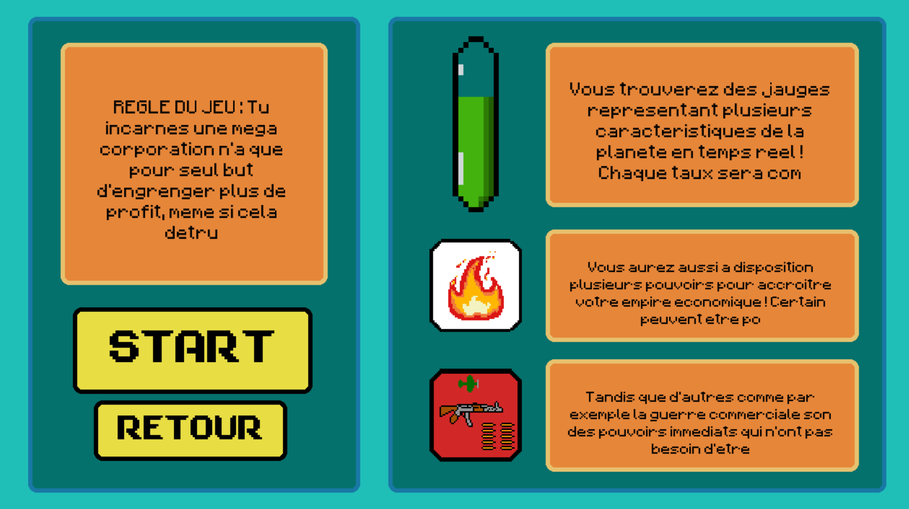

Mes Projets

Robot - Olympiade SI
Robot conçu et programmé pour l'Olympiade des Sciences de l'Ingénieur.
En savoir plus

Développeur / Étudiant
Je suis un étudiant passionné par l'informatique et les sciences. J'ai conçus et développé mon
propre portfolio afin de mettre en valeur mes compétences et mes projets
réalisés et à venir. J'aime créer des projets qui combinent technologie et réflexion pour m'offrir
une vraie expérience pendant mon temps libre.
Je suis autonome et persévérant. J'aime les projets car ils demandent de chercher
des solutions par soi-même et d’essayer différentes méthodes.
Ce portfolio en est la preuve.
Mon objectif est de continuer à apprendre et à développer mes compétences en informatique et en
ingénérie, tout en partageant mes projets et mes expériences à travers ce portfolio.
N'hésitez pas à aller visiter mes projets pour en savoir plus!
Merci de votre visite !
Mon CV complet :
Afficher mon CV sur votre navigateur
Robot conçu et programmé pour l'Olympiade des Sciences de l'Ingénieur.
En savoir plus